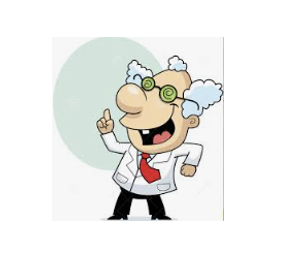

SBLab
Home
People
Research
Publications
News
Members
Members
Alumni
Categories
All
(5)
Artificial intelligence
(1)
Biocatalysis
(1)
Bioinformatics
(1)
CRISPR
(1)
CRISPR-X
(1)
Chemical materials
(1)
Genetic engineering
(1)
HT screening
(1)
Lab automation
(1)
Metabolic engineering
(4)
Microbiology
(3)
Synthetic biology
(5)
Systems biology
(2)
Terpenoids
(1)
Members

Lee, Seung Goo(이승구)
Research Scientist, Director of Synthetic Biology and Bioengineering Research Institute (합성생물학연구소)
Lee, Dae Hee(이대희)
Research Scientist, Director of Synthetic Biology Research Center (합성생물학연구센터)
Kim, Haseong (김하성)
Research Scientist
Shin, Jonghyeok (신종혁)
Research Scientist
Kim Seong-keun (김성근)
Research Scientist
No matching items